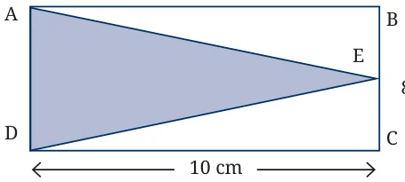
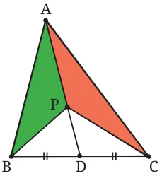
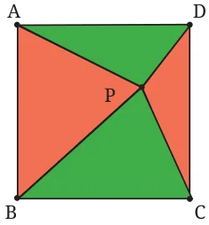
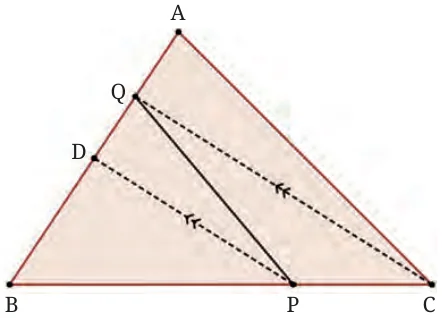

Think and Reflect
What procedure would you use to square a given triangle? Here, the task is to construct a square whose area is equal to the area of some given triangle. Think carefully. How would you proceed?
- Find the area of triangle ADE in Fig. 6.31.

- The parallel sides of a trapezium are 40 cm and 20 cm. If its non-parallel sides are both equal, each being 26 cm, find the area of the trapezium.
- Find the area of a triangle, given that its sides are 8 cm and 11 cm long, and its perimeter is 32 cm.
- The sides of a triangular plot are in the ratio 3: 5: 7; its perimeter is 300 m. Find its area.
- One diagonal of a rhombus is twice as long as the other diagonal. If the rhombus has area 128 cm , find the length of the shorter diagonal.
- ABCD is a parallelogram. P and Q are any two points on side AB. What can you say about the ratio area ( \(\triangle\) PCD): area ( \(\triangle\) QCD)?
- O is any point on the diagonal PR of a parallelogram PQRS. Prove that the areas of triangles PSO and PQO are equal.
- If the mid-points of the sides of a 4-gon (also known as a quadrilateral, but we prefer to call it a ‘4-gon’) are joined in order, prove that the area of the parallelogram thus formed will be half of the area of the given 4-gon. (You may wonder whether the 4-gon thus formed is always a parallelogram, and if so, why? These questions will be tackled and answered in the chapter on quadrilaterals.)
- In \(\triangle ABC\), the midpoint of BC is D (Fig. 6.32). Median AD is drawn. P is any point on AD. Show that area ( \(\triangle\) ABP) = area ( \(\triangle\) ACP).


- Given a square ABCD, let P be a point within it. Join PA, PB, PC, PD (Fig. 6.33). What is the ratio of the areas of the red region ( \(\triangle PAB\) and \(\triangle\) PCD) and the green region ( \(\triangle PBC\) and \(\triangle\) PDA)?
- In \(\triangle ABC\), D is the midpoint of AB. P is any point on BC, and Q is a point on AB such that CQ || PD. PQ is joined (Fig. 6.34). Prove that Area ( \(\triangle\) BPQ) \(= \frac{1}{2}\) Area ( \(\triangle\) ABC).
